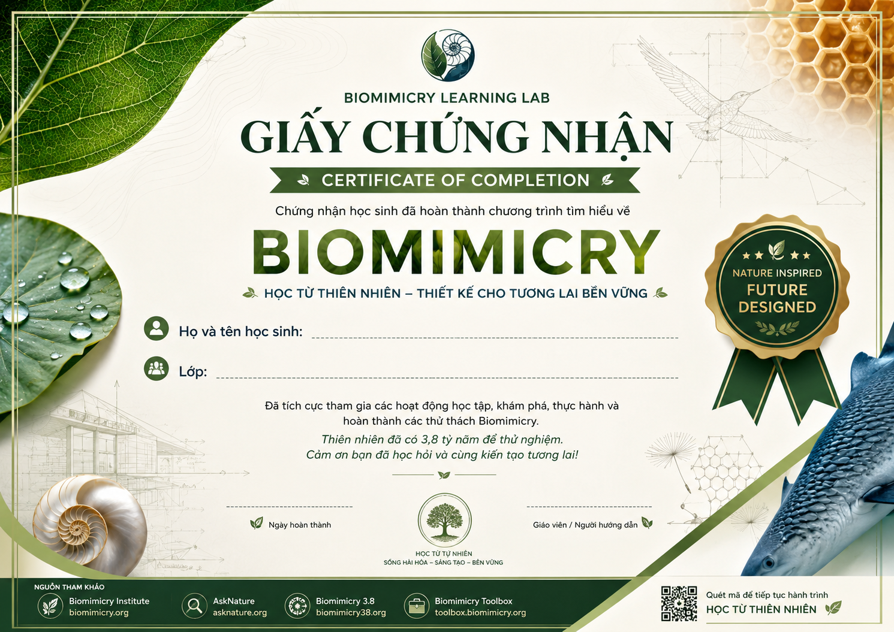

BIOMIMICRY MISSION · PHIẾU HỌC TẬP
BIOMIMICRY EXPLORATION LAB · CÔNG NGHỆ 12
BIOMIMICRY
Khi thiên nhiên trở thành nhà thiết kế
3,8 tỷ năm thử nghiệm. Hàng triệu chiến lược sinh tồn. Vô số ý tưởng đang chờ chúng ta khám phá.
FORM gân phân nhánh
FUNCTION phân phối
DESIGN mạng lưới hiệu quả
BIOMIMICRY MISSION · LEARNING JOURNEY
Hoàn thành từng nhiệm vụ.
Mở khóa tư duy thiết kế.
Mission kết nối trực tiếp với tiến trình trên lớp: quan sát ở Tuần 3, chuyển hóa Biology → Design ở Tuần 4, rồi phát triển vật liệu, moodboard và concept sketch từ Tuần 5–7.
◌⌁⬡Nature → Design
MISSION PROGRESS0%
Nhiệm vụ đầu tiên đã sẵn sàng.
MISSION WORKSHEET
Phiếu học tập được tạo từ chính câu trả lời của em.
Điều kiện xuất PDF: hoàn thành toàn bộ 6 Mission. Dữ liệu tự động lưu trên thiết bị.
01 · DISCOVER
Giống tự nhiên chưa chắc là Biomimicry.
Chọn nhãn cho từng ví dụ. Điều quyết định không phải hình dáng - mà là cách thiết kế liên hệ với tự nhiên.
?
Quan sát ví dụ rồi chọn một nhãn.
Nature→Function→Strategy→Design
NATURE AS MODEL
Chim bói cá không cho ta “hình con chim”. Nó cho ta một chiến lược chuyển tiếp êm giữa hai môi trường.
Quan sát cấu trúc → hiểu cơ chế → trừu tượng hóa → thử trong bối cảnh mới.
Chúng ta đang lấy từ thiên nhiên hay đang học từ thiên nhiên?
02 · UNDERSTAND
10 design lessons from nature
Đây không phải 10 công thức. Đó là những xu hướng giúp sự sống vận hành trong giới hạn của Trái Đất.
MICRO EXPLORATION · RESILIENCE
Self-healing concrete
Ví dụ lai giữa Biomimicry và Bioutilization: học khả năng tự sửa chữa của sinh vật, đồng thời sử dụng vi khuẩn trong vật liệu.
→→→
CHALLENGE · MATCH
Nature ↔ Human Design
Điểm 0/8
Chọn một thẻ Nature, sau đó chọn Design tương ứng. Hoàn thành bằng bàn phím hoặc chuột.
NATURE
HUMAN DESIGN
Ghép cặp đầu tiên để bắt đầu.
03 · ASK
Stop searching for animals.
Start searching for functions.
Đừng hỏi “con vật nào giống mái nhà?”. Hãy hỏi “How does nature manage heat?”.
ACTIVITY · BIOLOGIZE IT
Biến vấn đề người thành câu hỏi sinh học
HUMAN CHALLENGE
ASKNATURE SEARCH SIMULATOR
Explore on AskNature ↗ASKNATURE RESEARCH CHALLENGE
Từ Function đến Design Principle
04 · ABSTRACT
Biomimicry Design Spiral
Không phải đường thẳng. Khi bằng chứng thay đổi, nhà thiết kế quay lại hỏi, tìm và thử tiếp.
TWO PATHWAYS
Đi vào quy trình từ đâu?
05 · DISCOVER
Biomimicry Case Lab
Mở một mẫu vật. Lần theo chuỗi Challenge → Function → Mechanism → Principle → Design.
06 · CREATE
Your turn.
Nature is now your design mentor.
Chọn một Design Challenge rồi xây dựng lập luận Biomimicry của riêng bạn.
07 · EVALUATE
Would nature do it this way?
Đánh giá không phải để “đóng dấu xanh”. Đó là cách tìm ra vòng cải tiến tiếp theo.
08 · FINAL CHALLENGE
Biomimicry Detective
Đọc dấu vết chức năng. Tìm cơ chế. Nhận diện nguyên lý.
Câu 1 / 120 điểm

SOURCES & CREDITS
Đi xa hơn cùng thiên nhiên.
Nội dung được diễn giải và chuyển thành hoạt động học tập; không sao chép dài nguyên văn.
01
Biomimicry Institute
Khái niệm, giáo dục và đổi mới nature-positive.
Visit ↗ 02AskNature
Thư viện Biological Strategies và Innovations.
Explore ↗ 03Biomimicry 3.8
DesignLens, Life’s Principles và Biomimicry Thinking.
Learn ↗ 04Biomimicry Toolbox
Core concepts, Design Spiral và phương pháp ứng dụng.
Open ↗Tài liệu lớp học: NUPs-Examples-PDF-updated.pdf và Toolbox_Natures_Patterns.05122021.pdf, Biomimicry Institute.
Minh họa trên website là SVG/CSS nguyên bản. Các tên thương hiệu và case study được dùng cho mục đích giáo dục.